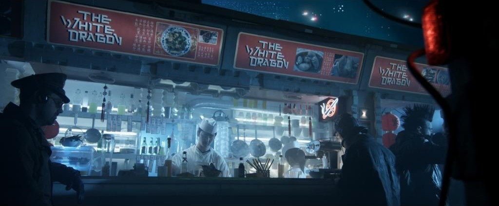

12/02/2049
On Monday, the fast-casual chinese chain announced a $660 million equity financing round led by the private-equity investment firm, Asea and Rice. Including this round of funding, White Dragon has raised $335 million this year alone.
White Dragon has more than doubled its size over the past three years, to 100,173 total stores world wide. Neon's Restaurant News last week named it the fastest-growing major chain in the entire restaurant industry in 2047, based on its 44.7% year-over-year US systemwide sales growth.

From head of marketing at White Dragon Chung Li -
"For the past four years, we've been the fastest-growing restaurant brand in the world. And that rate of growth requires capital!".
"The $660 million round of funding is crucial to White Dragons plan to continue our explosive growth
"We ultimately decided that if we were going to become the leader in this category ... we need to get out and be aggressive about our growth in this kind of formative stage of the category," Chun Li said.